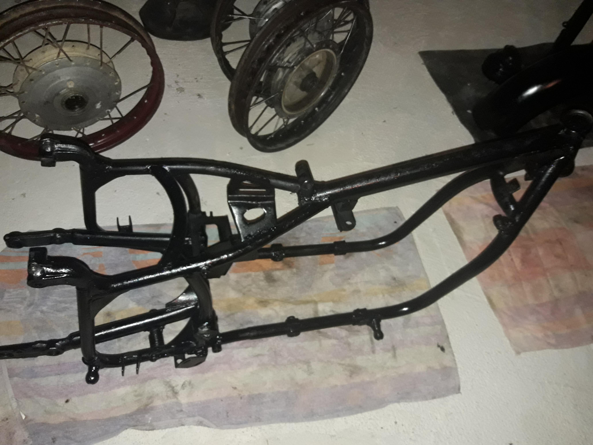
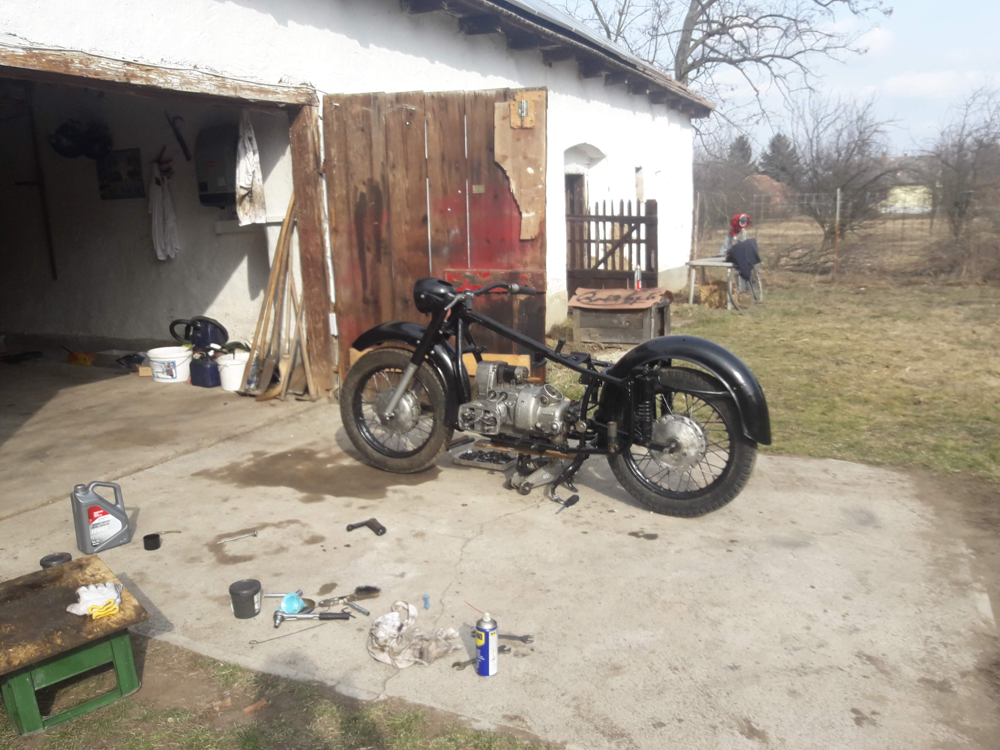
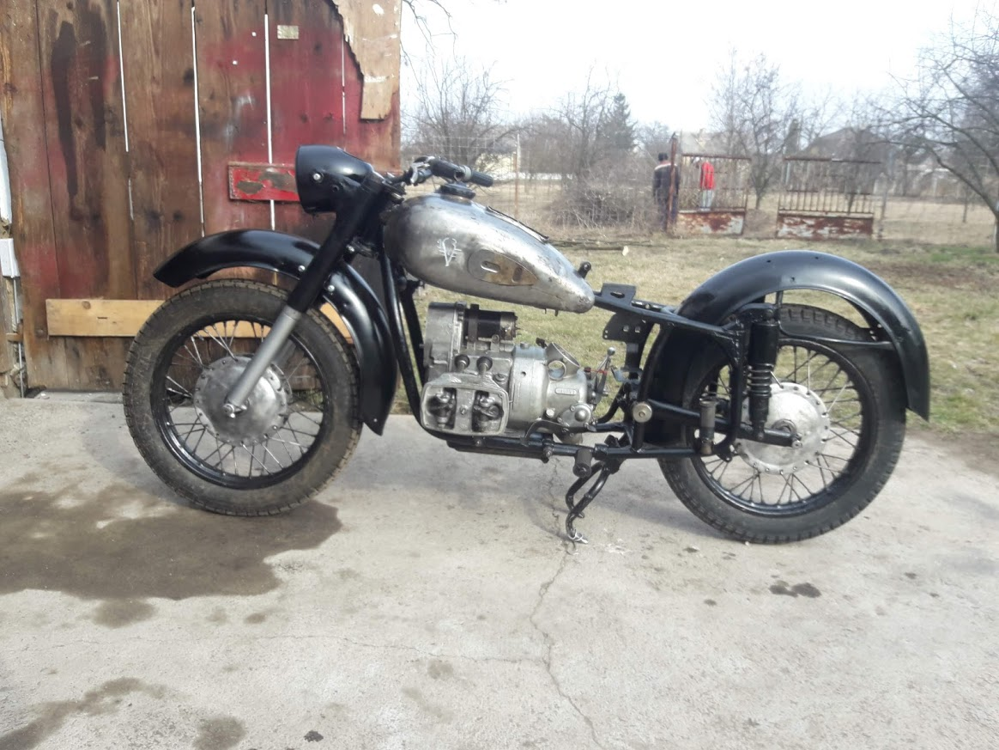
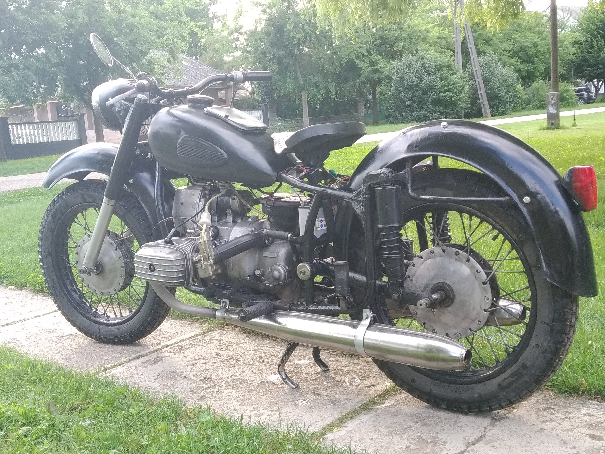

Dnepr k650 restaurálás
A képen látható motor egy Dnepr k650, pontos évjárata nem ismert, 1967-69 közöttről származhat a motorszáma alapján. A motor 2018 május 10-én került hozzánk, nagyon rossz, hiányos állapotban. A következő két évben teljesen felújítottuk, minden egyes munkálatot mi végeztünk el rajta. A felújítást követő pát hónap a motor bejáratásáról szólt, ki kellett küszöbölnünk melegedési problémákat, gyújtás problémákat és tömítési problémákat. Mostanra viszont egy abszolút megbízható motor lett belőle, amivel bátran neki lehet indulni akár hosszbb távoknak is.
Elérhetőség: gybobek@gmail.com